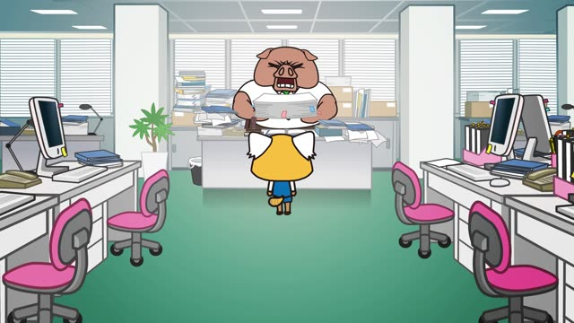
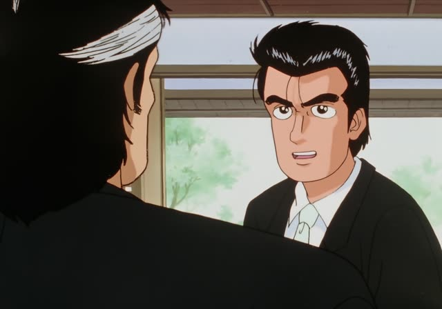
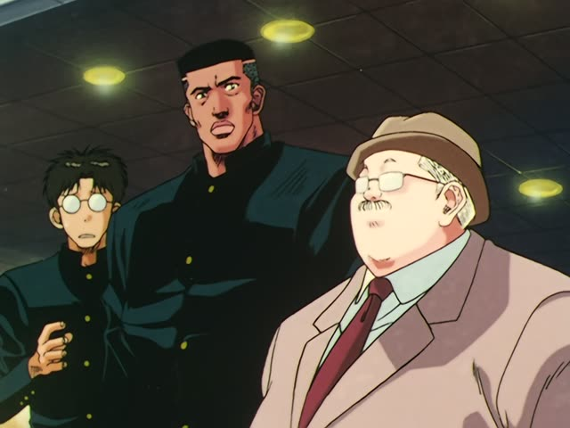
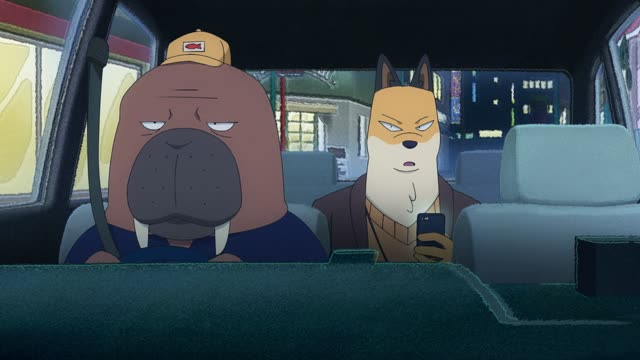
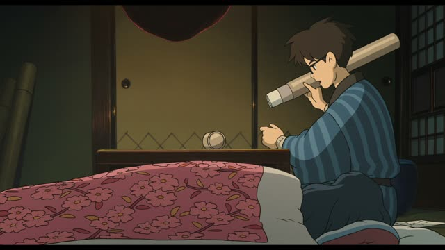

までに
From Up on Poppy Hill
は～い！夕食までには戻ります。
"Okay! I'll be back by dinner."
までに after a time or event means "by then": a deadline. It happens once, at some point before that time.
Don't mix it up with まで ("until"), where something keeps going the whole time up to that point. までには adds a little "at least by then".
On this card, she doesn't say when exactly she'll come back, only that it will be before dinner.

Aggretsuko · Season 1, Episode 4
午後までにこの伝票整理やっとけ。
"Get these slips sorted by the afternoon."
On this card, the boss gives a deadline: any time is fine, as long as it's done before the afternoon.
Quick Examples
A teacher hands out homework.
金曜日までにレポートを出してください。
"Please hand in your report by Friday."
PoliteYour partner asks when you'll be home.
５時までに帰ります。
"I'll be home by five."
PoliteYour kid heads out to play.
暗くなるまでに帰ってきてね。
"Be back before it gets dark, okay?"
The deadline can be an event too: dictionary form + までに.
CasualWith and without
５時まで働きます。
"I work until five." The work goes on the whole time, then stops at five.
５時までに帰ります。
"I'll be home by five." Coming home happens once, any time before five.
Examples from Media
Kekkon Dekinai Otoko · Episode 5
明日の朝までにお願いします。
"[The drawings,] by tomorrow morning, please."

Oishinbo · Episode 17
今から行って７時半までに戻るなんて不可能ですよ！
"Going there now and getting back by 7:30 is impossible!"

Slam Dunk · Episode 35
試合開始までには間に合うようにやってくるでしょう。
"They'll probably make it by the time the game starts."

Odd Taxi · Episode 5
人迎えに行って、７時までに笹塚のスタジオなんですよ。
"I have to pick someone up and be at the studio in Sasazuka by seven."

The Wind Rises
明日までに決めなきゃいけないんだ。
"I have to decide by tomorrow."
Vinland Saga · Episode 15
なら、夜までに仕上げろ。
"Then finish them by tonight."
Shirokuma Cafe · Episode 37
じゃあ、クリスマスまでに考えておくね。
"Okay, I'll think about it before Christmas."
Brush Up Life · Episode 6
臼田さんはどうしても明日昼までには出なきゃいけなくて。
"Usuda-san really has to leave by noon tomorrow."